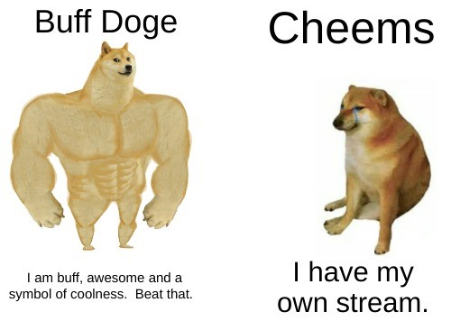

Cheems, affectionately known as "Balltze" in the meme
community, was a beloved dog that
brought joy and laughter to millions of internet users through the Bonk and Doge memes. With his
endearing and relatable expressions, Cheems became an iconic figure in the world of memes and a symbol
of resilience and humor.
Cheems was first introduced to the meme world as a part of the Doge meme family. While Doge
featured the famous Shiba Inu with a funny internal monologue written in Comic Sans font, Cheems
had his own unique charm. His distinctive appearance, often depicted with a cup of coffee or
some other comically oversized object, quickly captured the hearts of meme enthusiasts.
One of Cheems' most iconic moments was when he starred in the "Bonk" meme. In this meme, Cheems
was hilariously depicted with a baseball bat ready to bonk someone on the head. The meme is
often captioned with humorous and relatable scenarios where someone receives a "bonk" for their
actions. It became a favorite way to gently poke fun at everyday life situations.
The Legacy Lives On
Cheems may have crossed the Rainbow Bridge, but his legacy continues to live on in the hearts and
minds of meme enthusiasts. His images are still shared, remixed, and captioned with new and
creative jokes every day, keeping the spirit of Cheems alive in the online world.

Remembering Cheems
Let us take a moment to remember and celebrate the joy that Cheems brought into our lives. His endearing
presence and the laughter he shared will forever be etched in the annals of internet history. Cheems, or
Balltze, will always be our favorite meme dog.
In Loving Memory of Cheems (Balltze)2007 - 2022
"In the realm of memes, Cheems was a legend. He may be gone, but his memetic
legacy lives on."